방송통신기사 (2020-09-26 기출문제)
1과목: 디지털 전자회로
1. 직류 출력전압이 무부하일 때 250[V]이고, 부하일 때 220[V]이다. 이때 정류회로의 전압변동률은?
- 12.6[%]
- 13.6[%]
- 25.2[%]
- 27.2[%]
(정답률: 62%)

2. 다음과 같은 정류회로에 사용된 다이오드의 최대 역전압(PIV)는 10[V]이다. 100[V], 60[Hz]의 피크 정현파가 입력될 때, 정상적인 회로 동작을 보장하기 위한 최대 권선비는? (여기서, n은 1차측 권선비이고 m은 2차측 권선비이다.)
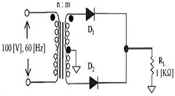
- 10 : 1
- 1 : 10
- 1 : 20
- 20 : 1
(정답률: 63%)
3. 제너 다이오드의 항복전압이 10[V], 내부저항이 8.5[Ω]이다. 제너 전류가 20[mA]일 때 부하전압은 얼마인가?
- 10.11[V]
- 10.13[V]
- 10.15[V]
- 10.17[V]
(정답률: 67%)
4. 다음 중 증폭기에 대한 설명으로 옳은 것은?
- 교류성분을 직류성분으로 변환하기 위한 전기회로이다.
- 다이오드를 사용하여 교류 전압원의 (+) 또는 (-)의 반사이클을 정류하고, 부하에 직류 전압을 흘리도록 한다.
- 교류(AC)를 직류(DC)로 바꾸는 여러 과정 가운데 맥류를 완전한 직류로 바꾸어 준다.
- 입력의 신호변화 형상이 출력단에 확대되어 복사된다.
(정답률: 62%)
5. 다음 중 부궤환 증폭회로의 특징이 아닌 것은?
- 이득 증가
- 비직선 일그러짐 감소
- 잡음 감소
- 안정도 향상
(정답률: 49%)
6. 다음 증폭기에 대한 설명으로 틀린 것은?
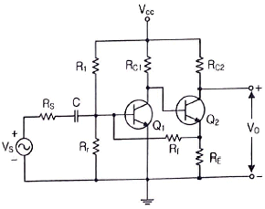
- 병렬전류부궤환 회로이다.
- 입력임피더스는 감소하며 출력임피던스는 증가한다.
- 궤환율(β)는 -RE/Rr이다.
- RE, Rr, RS, RC1이 안정화 되면 TR의 파라미터 변화와 관계없이 안정한 출력이 나온다.
(정답률: 65%)
7. 다음 중 이상적인 연산증폭기의 특성이 아닌 것은?
- 전압증폭도가 무한대
- 입력 임피던스가 무한대
- 출력 임피던스가 무한대
- 주파수 대역폭이 무한대
(정답률: 50%)
8. 증폭기와 정궤환 회로를 이용한 발진회로에서 증폭기의 이득을 A, 궤환율을 β라고 할 때, βA＞1이면 출력되는 파형은 어떤 현상이 발생하는가?
- 출력되는 파형의 진동이 서서히 사라진다.
- 출력되는 파형은 진폭에 클리핑이 일어난다.
- 지속적으로 안정적인 파형이 발생한다.
- 출력되는 파형은 서서히 진폭이 작아진다.
(정답률: 78%)
9. 다음 중 온도 특성이 좋고, 전원이나 부하의 변동에 대하여 비교적 안정도가 좋기 때문에 안정한 주파수의 발생원으로 많이 쓰이는 발진회로는?
- 빈 브리지형 발진회로
- 수정 발진회로
- RC 발진회로
- 이상형 발진회로
(정답률: 72%)
10. 다음 중 RC발진회로에 대한 설명으로 옳은 것은?
- 콘덴서와 저항만으로 궤환회로를 구성한다.
- 압전기 효과를 이용한 발진기이다.
- 종류로는 콜피츠 발진회로와 하틀리 발진회로가 있다.
- 부궤환 시키면 발진 주파수가 증가한다.
(정답률: 50%)
11. 다음 그림과 같은 AM변조 회로는 어떤 변조인가?
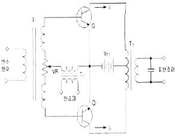
- 베이스 변조회로
- 에미터 변호회로
- 트랜지스터 평형 변조회로
- 컬렉터 변조회로
(정답률: 64%)
12. 다음 중 주파수 변조에서 S/N비를 높이기 위한 방법이 아닌 것은?
- 주파수 대역폭을 크게 한다.
- 변조지수를 크게 한다.
- 프리엠퍼시스 회로를 사용한다.
- 주파수 변별회로를 사용한다.
(정답률: 40%)
13. 진폭변조에서 신호파의 진폭이 70, 반송파의 진폭이 100일 때의 변조도는 몇 [%]인가?
- 20[%]
- 30[%]
- 70[%]
- 100[%]
(정답률: 62%)
14. 다음 중 아날로그 신호를 디지털 신호로 변환할 때 양자화 잡음의 경감 대책이 아닌 것은?
- 압신기를 사용한다.
- 양자화 스탭수를 감소시킨다.
- 양자화 비트수를 증가시킨다.
- 비선형화 한다.
(정답률: 69%)
15. 펄스파에서 낮은 주파수 성분이나 직류분이 잘 통하지 않기 때문에 생기는 것으로 펄스 하강 부분이 낮아진 크기를 무엇이라 하는가?
- 세그(Sag)
- 링깅(Ringing)
- 언더슈트(Undershoot)
- 오버슈트(Overshoot)
(정답률: 64%)
16. 다음 회로의 입력에 정현파를 가했을 때 출력 파형은?
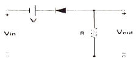
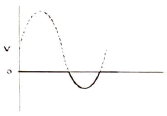
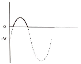
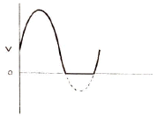
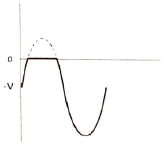
(정답률: 67%)
17. 다음 회로에서 A, B, C를 입력, X를 출력이라고 하면 회로는 어떤 논리 게이트인가? (단, 정논리 회로이다.)
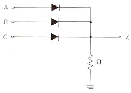
- NAND 게이트
- OR 게이트
- AND 게이트
- NOR 게이트
(정답률: 64%)
18. 입력 주파수 512[kHz]를 T형 플립플롭 7개 종속 접속한 회로에 인가했을 때 출력 주파수는 얼마인가?
- 256[kHz]
- 8[kHz]
- 4[kHz]
- 2[kHz]
(정답률: 58%)
19. 비동기식 5진 카운터(Counter) 회로는 최소 몇 개의 플립플롭(Flip-Flop)이 필요한가?
- 4
- 3
- 2
- 1
(정답률: 68%)
20. 조합 논리 회로 중 0과 1의 조합으로 부호화를 행하는 회로로 2n개의 입력선과 n개의 출력 선으로 구성된 것은?
- 디코더(Decoder)
- DEMUX
- MUX
- 인코더(Encoder)
(정답률: 70%)
2과목: 방송통신 기기
21. 다음 중 음향설비가 갖추어야 할 조건으로 틀린 것은?
- 외부에 대한 누음이 잘 될 것
- 사용목적에 적합한 울림의 길이와 음질을 갖출 것
- 조용한 환경일 것
- 저음역의 고유진동에 부밍(Booming)이나 울림 등이 없을 것
(정답률: 72%)
22. 임피던스가 25[Ω]인 반파장 안테나와 특성임피던스가 100[Ω]인 선로를 정합하기 위한 임피던스 값은?
- 150[Ω]
- 250[Ω]
- 25[Ω]
- 50[Ω]
(정답률: 72%)
23. 다음 중 카메라의 위치를 움직이지 않고 카메라 헤드만을 수평방향으로 회전시키면서 촬영하는 것은?
- 패닝(Panning)
- 틸팅(Tilting)
- 달리(Dolly)
- 붐(Boom)
(정답률: 73%)
24. 영상신호의 압축은 아래 항목들을 효율적으로 제거함으로써 얻어질 수 있다. 이중 관련이 없는 항목은?
- 색신호간 중복성 제거
- 공간적 중복성 제거
- 통계적 중복성 제거
- 주파수 대역별 중복성 제거
(정답률: 67%)
25. 다음 중 슈퍼 헤테로다인 수신기의 장단점으로 틀린 것은?
- 중간 주파수로 변환 증폭하므로 감도와 선택도가 좋다.
- 광대역에 걸쳐 선택도가 떨어지지 않고 충실도가 좋다.
- 국부 발진주파수의 고조파와 수신 전파 사이의 비트 방해를 받기 어렵다.
- 영상(Image) 주파수 혼신을 받기 쉬우며 회로가 복잡하다.
(정답률: 50%)
26. 다음 중 음향효과 기기가 아닌 것은?
- Amplifier
- Equalizer
- Expander
- Noise Gate
(정답률: 61%)
27. 다음 중 NTSC 컬러TV 방식에서 수평동기 주파수는?
- 약 75.350[kHz]
- 약 35.734[kHz]
- 약 15.734[kHz]
- 약 75.350[kHz]
(정답률: 59%)
28. 아날로그 컬러 TV방송 방식 중 PAL 방식의 설명으로 적합한 것은?
- 프랑스에서 개발하여 주로 동유럽에서 채택하고 있다.
- 휘도신호에 두 개의 색차신호(I, Q 신호)를 3.58[MHz]의 색부반송파로 전송하는 방식이다.
- 두 개의 색차신호 중 하나의 위상을 주사선마다 180도씩 반전시켜 전송하는 방식이다.
- 두 개의 색차신호를 동시에 전송하지 않고 각 주사선마다 순차적으로 교체하면서 색부반송파를 주파수변조하여 전송하는 방식이다.
(정답률: 63%)
29. 다음 중 OFDM(Orthogonal Frequency Division Multiplexing)방식에 대한 설명으로 틀린 것은?
- 멀티캐리어 변조방식의 일종이다.
- 국내 지상파 DMB에서 적용하는 전송방식이다.
- 단일 반송파 방식이다.
- 대역폭당 전송속도의 향상과 간섭방지의 효과를 얻을 수 있다.
(정답률: 66%)
30. 전파가 전리층을 통과할 때 편파면이 회전하게 되는 현상은?
- 도플러 회전
- 패러데이 회전
- 전리층 회전
- 도약 회전
(정답률: 55%)
31. 방송용으로 이용되는 인공위성이 갖추어야 할 조건이 아닌 것은?
- 12개 이상의 소출력 중계 위성
- 정지 궤도 위성
- 36,000[km] 궤도의 높이
- 120[W] 이상의 고출력
(정답률: 70%)
32. 다음 중 AM 광 송신기(옥내용)에 대한 설명으로 틀린 것은?
- 구성으로는 차단스위치, 레이져 모듈, 상태펴시기와 조정기 등으로 구성된다.
- 하향 광 송신기는 고효율 스위칭 조절 공급기의 과전류로부터 보호된다.
- 상향 광 송신기는 RF신호를 광선로로 전송할 수 있는 광신호로 변환한다.
- 광검출기는 광대역 RF변환기로서 광섬유로 입력된 광신호는 광대역 RF신호를 형성하여 광다이오드에 입력된다.
(정답률: 67%)
33. 공동주택의 수신설비에 대한 분류와 활용 장비가 맞는 것은?
- 안테나 수신점 설비는 세대분배기함, MATV분배기 또는 CATV분배기, 직렬단자, 직렬단자선로 등이 있다.
- 헤드앤드 설비는 분리기, 자동이득조정증폭기, 아날로그 신호처리기, 디지털 신호처리기 등이 있다.
- 공동구 간선설비는 각 채널별 수신안테나, 안테나신호 인입 전송선로, 보호기, 대역통과여파기, 전치증폭기 등이 있다.
- 세대인입설비는 MATV 간선증폭기 또는 CATV 간선증폭기, 전송선로설비, 동축커넥터 등이 있다.
(정답률: 63%)
34. 다음 중 유선방송의 구내전송 설비에서 시청가입자의 TV수상기 입력단자가 300[Ω] 평행신호로 변환하는데 이용되는 기기로 가장 적절한 것은?
- 탭 오프(Tap off)
- 보안기
- 정합기
- 신호증폭기
(정답률: 55%)
35. 다음 중 IPTV 서비스 구조에 대한 설명으로 틀린 것은?
- 서비스 플랫폼은 크게 헤드 엔더, 백본 네트워크, 엑세스 네트워크, 가입자 장치의 4가지 요소로 구성된다.
- 클라이언트-서버의 구조는 단순하고 망 기능이 제한되어 있는 관계로 서비스 도입이 불편한 단점을 갖는다.
- 서비스를 위한 모든 기능은 가입자 단말과 헤드 엔더 간에 이루어지는 일종의 클라이언트-서버 모델로 동작한다.
- 망은 단순히 멀티캐스트 스트리밍의 품질을 보장하여 전달하고 필요에 따라 사용자가 원하는 채널을 엑세스 망에서 브렌칭하는 기능만을 담당한다.
(정답률: 67%)
36. 유선 브로드밴드(IP망 기반)을 통해 가입자에게 비디오를 전송하는 서비스를 총칭하여 PP, CP에게서 받은 프로그램을 인터넷망을 통하여 가입자에게 전송해 주는 뉴미디어 서비스는?
- CATV
- 위성TV
- IPTV
- 초고속인터넷서비스
(정답률: 73%)
37. 국내 지상파 DMB 채널의 대역폭은?
- 6[MHz]
- 3.1[MHz]
- 2.04[MHz]
- 1.536[MHz]
(정답률: 59%)
38. 다음 중 공진회로 이외의 다른 회로가 원인이 되어 목적 이외의 다른 주파수 성분이 정궤환에 의해 발진되는 현상은?
- 기생발진
- 궤환발진
- 공진발진
- 여진발진
(정답률: 77%)
39. SD급 디지털 비디오 신호의 전송과정에서 비트에러 등을 체크하기 위한 용도로 사용되는 것은?
- Checksum
- Parity check
- EDH(Error Detection & Handling)
- ECC(Error Correction Code)
(정답률: 65%)
40. 디지털 지상파 송신기 출력을 8VSB 분석기로 측정했을 때 SNR(신호 대 잡음비)는 얼마 이상이어야 하는가?
- 25[dB]
- 27[dB]
- 30[dB]
- 33[dB]
(정답률: 48%)
3과목: 방송미디어 공학
41. 다음 중 텔레비전 방송 주파수에 관한 설명으로 틀린 것은?
- 일반적인 아날로그 지상파 TV방송 사용 주파수는 30~300[MHz]이하의 주파수를 사용한다.
- 지상파 TV방송은 VHF 와 UHF 주파수대역을 사용하고 있으며 각 채널당 주파수 대역폭은 6[MHz]이다.
- 아날로그 TV 수직 주사선 주파수는 15,750[Hz]이다.
- 디지털 방송시스템 도입으로 향후에 아날로그 TV 1개 채널로 SD급 디지털 채널로 전환시에는 4~5개로 확장이 가능하나, HDTV 1개 채널당 6[MHz]가 필요하다.
(정답률: 58%)
42. 다음 중 우리나라의 지상파 디지털 방송 방식에서 사용하는 변조방식은?
- BST-OFDM
- VSM-AM
- COFDM
- 8-VSB
(정답률: 75%)
43. 다음 중 잘못된 내용은?
- AM라디오 주요 편성기법의 하나는 띠 편성이다.
- AM라디오 주요 편성기법의 하나는 구획 편성이다.
- FM라디오 주요 편성기법의 하나는 장기간 편성이다.
- FM라디오 주요 편성기법의 하나는 띠 편성이다.
(정답률: 69%)
44. 아날로그신호를 디지털 형태의 PCM신호로 변화시키기 위해서는 세 가지 기본 과정이 필요하다. 다음 중 PCM과정으로 옳은 것은?
- 표본화(Sampling)→양자화(Quantization)→부호화(Coding)
- 부호화(Coding)→표본화(Sampling)→양자화(Quantization)
- 표본화(Sampling)→부호화(Coding)→양자화(Quantization)
- 양자화(Quantization)→표본화(Sampling)→부호화(Coding)
(정답률: 79%)
45. 다음 중 소리의 방향지각에 대한 설명으로 가장 적절하지 않은 것은?
- 두 귀에 입사하는 소리 세기와 레벨차로 지각한다.
- 수평 방향보다 수직 방향의 지각 능력이 좋다.
- 거리감의 지각 능력은 좋지 않다.
- 수직 방향은 머리전달 함수로 지각한다.
(정답률: 67%)
46. 다음 중 앰프의 특성으로 틀린 것은?
- 댐핑 팩터는 내부 저항이 작을수록 커진다.
- 앰프의 정격 출력은 사용 스피커의 허용 입력보다 작은 것이 안전하다.
- A급 앰프는 소비 전력이 가장 많다.
- 고조파 왜곡은 과대 입력 때문에 생긴다.
(정답률: 74%)
47. 다음 중 TV 주사방식의 설명으로 틀린 것은?
- 순차주사는 하나의 화면을 기수와 우수로 나누어 전송 한다.
- 순차주사는 주사 속도가 빨라서 전송 주파수 대역을 넓게 차지한다.
- 비월주사는 한 번에 보내는 정보량이 절반으로 되어 전송 주파수 대역을 반(1/2)으로 줄일 수 있다.
- 비월주사는 하나의 화면을 두 개의 필드로 나눈다.
(정답률: 58%)
48. 다음 중 색에 관한 설명으로 틀린 것은?
- 색체에 대한 눈의 특성은 색의 면적 대소와 색의 거리에 따라 색 감각이 달라지며, 눈의 순응은 명암순응과 색순응이 있다.
- 색의 성질을 나타내는 3가지 요소는 색상, 포화도, 밝기이며 영상화질 평가요소는 콘트라스트와 해상도가 추가된다.
- 색상과 밝기를 합쳐서 색도도라고 부르는데 이것은 말발굽 모양의 도형으로서 색체를 다루는 컬러텔레비전에서 중요한 역할을 한다.
- 색 온도란 완전한 암흑 속에서 물체가 서서히 백열화하여 가는 색의 빛을 기준하여 그 온도를 절대온도로 측정한 것으로 빛의 질을 나타낸다.
(정답률: 66%)
49. 다음 중 카메라 피사체를 향해 점차 앞으로 가거나 뒤로 멀어지는 움직임을 지칭하는 촬영기법으로 가장 적절한 것은?
- 팬(Pan)
- 틸트(Tilt)
- 붐(Boom)
- 달리(Dolly)
(정답률: 71%)
50. 조명기구를 매다는 것을 목적으로 하는 현가장치의 방식에 속하지 않는 것은?
- 그리드 방식
- 슬라이드 레일방식
- 배턴방식
- 로터리 스위치 방식
(정답률: 71%)
51. 스튜디오 조명을 5K 조명기, 2K 조명기와 같이 분류할 때, “K”가 의미하는 것은 무엇인가?
- 색온도
- 크기
- 무게
- 전력 용량
(정답률: 74%)
52. 다음 중 멀티미디어에 대한 설명으로 틀린 것은?
- 멀티(Multi)와 미디어(Media)의 합성어이다.
- 문자, 영상, 화상, 그림, 소리 등 다양한 미디어를 표현할 수 있다.
- 고속 통신망을 이용하여 사용자가 다양한 대용량의 정보를 이용 할 수 있다.
- 동영상은 표현 방식의 문제로 인해 멀티미디어 요소에 해당되지 않는다.
(정답률: 75%)
53. 다음 방송 미디어 중 전송 매체가 무선이 아닌 것은?
- 지상파 DTV방송
- T-DMB
- FM 라디오 방송
- IPTV 방송
(정답률: 66%)
54. 텔레비전을 인터넷망에 연결하여 영상 및 다양한 쌍방향 멀티미디어를 제공하는 방송통신 융합서비스를 무엇이라 하는가?
- IPTV
- DMB
- DVB-H
- HSDPA
(정답률: 77%)
55. 다음 중 4K UHDTV 영상의 해상도와 지원가능한 오디오 채널의 조합으로 맞는 것은?
- 1,920×1,080, 5.1 Ch.
- 3,840×2,160, 10.1 Ch.
- 7,680×4,320, 10.1 Ch.
- 7,680×4,320, 22.2 Ch.
(정답률: 68%)
56. MP3 파일은 다음 중 어디에 해당되는 오디어 압축 기술인가?
- MPEG-1
- MPEG-2
- MPEG-4
- MPEG-7
(정답률: 69%)
57. 다음의 아이(Eye) 다이어그램에서 지터(Jitter)에 해당되는 것은?
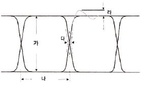
- 가
- 나
- 다
- 라
(정답률: 69%)
58. 하나의 반송파를 두 가지 이상의 음성으로 변조 방송하고, 그것을 수신측에서 분리 재생할 수 있게 한 방송방식은?
- 변조방송
- 음성다중방송
- 스테레오방송
- 음성분리방송
(정답률: 61%)
59. 비디오텍스의 특성에 대한 설명으로 틀린 것은?
- 컴퓨터와 통신에 대한 전문적인 지식이 없는 사용자도 필요한 정보를 즉시 제공받을 수 있다.
- 정보 센터에는 많은 양의 정보를 가지고 있으므로, 사용자가 필요한 충분한 정보입수가 가능하다.
- 정보 센터에서 정보를 갱신하면 언제나 새로운 정보를 얻을 수 있다.
- 단방향 통신기능으로 인해 다양한 서비스를 받을 수 있다.
(정답률: 79%)
60. 다음 중 유럽방식의 디지털 라디오(DAB)에 대한 설명으로 틀린 것은?
- 동일채널에서 아날로그, 디지털 동시방송이 가능하다.
- CD급의 깨끗한 음질을 제공한다.
- 부가적인 데이터 서비스가 가능하다.
- 그래픽, 텍스트 정보서비스가 가능하다.
(정답률: 66%)
4과목: 방송통신 시스템
61. 다음 중 디지털방송시스템의 특징이 아닌 것은?
- 방송의 다채널
- 방송의 고품질
- 복조과정이 잡음에 약함
- 방송의 스크램블화로 수신제한 가능
(정답률: 64%)
62. 통신시스템의 출력에 있어서 기본파의 출력이 10[V]이고, 제2고조파의 진폭이 4[V], 제3고조파의 진폭이 3[V]일 때, 송신기의 전체 고조파 왜율은?
- 20[%]
- 30[%]
- 40[%]
- 50[%]
(정답률: 53%)
63. 다음 중 방송국의 안테나공급전력이 2[kW]에서 50[kW]로 증가되고, 거리가 일정할 경우 전계 강도는 몇 배가 되는가?
- 5배
- 25배
- 1/5배
- 1/25배
(정답률: 61%)
64. 다음 보기 중에서 연주소에서 송신소로 신호를 전송하는 TV 방송시스템과 가장 관계가 깊은 것은?
- TSL
- 동기신호 발생기
- STL
- VMU
(정답률: 67%)
65. 무선 송신기에서 발생하는 스퓨리어스 발사에 대한 대책이 아닌 것은?
- 전력 증폭단에 π형 회로를 사용하여 고조파를 제거한다.
- 급전선에 트랩을 설치한다.
- 전력 증폭단을 B급 푸시풀 방식으로 한다.
- 동조회로에 Q를 가능한 낮게 한다.
(정답률: 54%)
66. 다음 중 FM 방송용 수신기의 구성으로 틀린 것은?
- 국부 발전기
- 주파수 혼합기
- 전폭 제한기
- 복호화기
(정답률: 50%)
67. 슈퍼헤터로다인 수신기의 중간주파수가 455[kHz]일 때 수신된 400[kHz]에 대한 영상주파수는?
- 855[kHz]
- 1,210[kHz]
- 1,255[kHz]
- 1,310[kHz]
(정답률: 69%)
68. 다음 중 CATV 시스템의 전송로와 가장 거리가 먼 것은?
- 광케이블
- 동축케이블
- 광 및 동축케이블
- UTP케이블
(정답률: 75%)
69. 미국의 지상파 디지털TV규격 관련하여 해당되지 않은 것은?
- 영상압축방식 : MPEG-2 MP@ML
- 음성압축방식 : Dolby AC-3
- 신호다중방식 : MPEG-4 SYSTEM
- 변조방식 : 8VSB
(정답률: 62%)
70. 다음 중 위성방송을 지상에서 수신 시 단위 면적을 통과하는 전자파의 전력선 밀도 P는 약 얼마인가? (단, 전계세기 E는 197[V/m]이다.)
- 197[dBW/m2]
- 153[dBW/m2]
- 136[dBW/m2]
- 103[dBW/m2]
(정답률: 62%)
71. 다음 중 TV 수신기 구성요소가 아닌 것은?
- 수신 안테나 튜너회로
- 영상 중간주파 증폭부
- 프리엠파시스
- 동기 및 편향신호
(정답률: 74%)
72. TV 프로그램 제작을 위한 영상설비 중 여러 개의 영상신호를 합성하는 기기는 무엇인가?
- 영상스위치
- 벡터 스코프
- 프레임 싱크로나이져
- 탈리 시스템
(정답률: 69%)
73. 다음 중 위성 궤도에 해당하지 않는 것은?
- 정기궤도
- 이동궤도
- 타원궤도
- 극궤도
(정답률: 47%)
74. 다음 중 위성통신의 종류에 따른 구분으로 틀린 것은?
- 통신위성
- 해사위성
- 과학위성
- 인텔세트(INTELSAT)위성
(정답률: 65%)
75. 다음 중 디지털 위성방송 송신시스템의 구성요소가 아닌 것은?
- MPEG-2 인코더
- 다중화기
- 등화기
- 저잡음주파수변환기(LNB)
(정답률: 67%)
76. 이동멀티미디어방송에서 사용하는 QPSK 변조방식은 하나의 부호에 몇 개의 비트가 할당되는가?
- 2
- 4
- 16
- 64
(정답률: 59%)
77. 중파 송신설비의 송신기를 조정하거나 시험하며, 고장 시 보수를 위해 필요한 측정기가 아닌 것은?
- 임피던스 브리지 미터(Impedance Bridge Meter)
- RF 오실레이터(RF Oschilator)
- 왜곡 분석기(Distortion Analyzer)
- 파형분석기(Waveform Monitor)
(정답률: 49%)
78. 다음 중 M/W(Microwave) 안테나회선의 송신기출력(Pt)이 10[dBm]이고, 송신안테나의 이득(Gt)은 30[dB], 수신안테나의 이득(Gr)은 5[dB], 자유공간 손실(L)은 5[dB]일 때, 수신전계강도(Pr)는?
- 40[dB]
- 30[dB]
- 20[dB]
- 10[dB]
(정답률: 65%)
79. AM 송신기의 주파수 안정도에 영향을 미치는 것이 아닌 것은?
- 전원전압의 변화
- 주위온도의 변화
- 전기적 정수의 변화
- 채널수의 변화
(정답률: 60%)
80. 다음 중 FM 방송에서 송신기의 최대 주파수 편이는?
- 25[Hz]
- 50[kHz]
- 75[kHz]
- 100[kHz]
(정답률: 78%)
5과목: 전자계산기 일반 및 방송설비기준
81. 다음 중 입출력 프로세서(I/O Processor)의 기능으로 틀린 것은?
- 컴퓨터 내부에 설치된 입출력 시스템은 중앙처리장치의 제어에 의하여 동작이 수행된다.
- 중앙처리장치의 입출력에 대한 접속 업무를 대신 전담하는 장치이다.
- 중앙처리장치와 인터페이스 사이에 전용 입출력 프로세서(IOP)를 설치하여 많은 입출력장치를 관리한다.
- 중앙처리장치와 버스(Bus)를 통하여 접속되므로 속도가 매우 느리다.
(정답률: 73%)
82. 입력장치에서 대량의 데이터를 전송하기 위해, 중앙처리장치(CPU)가 직접 기억장치 액세스(DMA, Direct Memory Access) 장치에 전달하는 정보로 틀린 것은?
- 전송한 워드(Word) 수
- 입력장치의 주소
- 작동할 연산(Operation) 수
- 데이터를 저장할 주기억장치의 시작 주소
(정답률: 51%)
83. 중앙 연산 처리 장치에서 마이크로 동장(Micro-Operation)이 순차적으로 일어나게 하려면 무엇이 필요한가?
- 스위치(Switch)
- 레지스터(Register)
- 누산기(Accumulator)
- 제어신호(Control Signal)
(정답률: 59%)
84. 10진수 56789에 대한 BCD코드(Binary Coded Decimal)는 어느 것인가?
- 0101 0110 0111 1000 1001
- 0011 0110 0111 1000 1001
- 0111 0110 0111 1000 1001
- 1001 0110 0111 1000 1001
(정답률: 71%)
85. 다음 중 제일 먼저 삽입된 데이터가 제일 먼저 출력되는 파일구조는?
- 스택(Stack)
- 큐(Queue)
- 리스트(List)
- 트리(Tree)
(정답률: 74%)
86. 다음 보기의 기억장치 중 속도가 가장 빠른 것에서 느린 순서대로 나열한 것으로 맞는 것은?
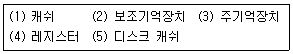
- 4-3-1-5-2
- 4-5-3-1-2
- 4-1-3-5-2
- 4-5-1-3-2
(정답률: 68%)
87. 다음 중 분산 처리 시스템에 대한 설명으로 틀린 것은?
- 사용자들이 여러 지역의 자원과 정보를 마치 자신의 시스템 내부 자원처럼 편리하게 사용한다.
- 지역적으로 분산된 여러대의 컴퓨터가 프로세서 사이의 특별한 데이터 링크를 통하여 교신하면서 동일한 업무를 수행한다.
- 접속된 모든 단말 장치에 CPU의 사용시간을 일정한 간격으로 차례로 할당한다.
- 자원의 공유, 신뢰성 향상, 계산속도 증가 등의 특징을 가진다.
(정답률: 67%)
88. 다음 중 프로그램의 종류에 대한 설명으로 틀린 것은?
- 베타버전이란 개발자가 상용화하기 전에 테스트용으로 배포하는 것을 말한다.
- 쉐어웨어란 기간이나 기능 제한 없이 무료로 사용하는 것을 말한다.
- 데모버전이란 기간이나 기능의 제한을 두고 무료로 사용하는 것을 말한다.
- 테스트버전이란 데모버전 이전에 오류를 찾기 위해 배포하는 것을 말한다.
(정답률: 72%)
89. 다음 중 JAVA 언어의 특징이 아닌 것은?
- 범용 프로그램
- 비독립적 플랫폼
- 분산자원에 접근 용이
- 객체 지향적 언어
(정답률: 54%)
90. 다음 중 프로그램 카운터와 명령의 번지부분을 더해 유효번지로 결정하는 주소 지정 방식은?
- 즉각 주소 지정 방식(Immediate Addressing Mode)
- 간접 지정 주소 방식(Indirect Addressing Mode)
- 직접 주소 지정 방식(Direct Addressing Mode)
- 상대 주소 지정 방식(Relative Addressing Mode)
(정답률: 50%)
91. 한국방송공사 등기 신청서의 첨부 서류가 아닌 것은?
- 설립등기에 있어서는 정관 및 출자액과 임원의 자격을 증명하는 서류
- 지역방송국의 설치등기에 있어서는 지역방송국의 경영목표를 증명하는 서류
- 이전등기에 있어서는 주된 사무소 또는 지역방송국의 이전을 증명하는 서류
- 변경등기에 있어서는 당해 변경사항을 증명하는 서류
(정답률: 66%)
92. 방송사업자가 방송통신위원회로부터 변경허가 또는 변경승인을 얻거나 변경등록을 해야 하는 것이 아닌 것은?
- 해당 법인의 합병 및 분할
- 방송분야의 변경
- 방송 프로그램 변경
- 방송구역의 변경
(정답률: 62%)
93. 다음 중 방송법의 목적에 해당되지 않는 것은?
- 방송의 자유와 독립을 보장
- 시청자의 권익 보호와 민주적 여론형성
- 방송의 발전과 공공복리의 증진
- 국민경제 발전 도모와 자율적 방송편성 보장
(정답률: 62%)
94. 유선방송국의 “수신설비”에 대한 설명으로 옳은 것은?
- 입력신호 에너지를 간선에서 지선으로 불균등하게 분리시키는 장치를 말한다.
- 유선방송을 수신하기 위하여 수신자가 구내에 설치하는 선로, 관로, 증폭기 등을 말한다.
- 유선방송을 수신하기 위한 분배기 및 분기기 등을 말한다.
- 유선방송국에서 텔레비전 방송신호를 수신하기 위한 수신 안테나, 케이블 및 증폭장치 등을 말한다.
(정답률: 60%)
95. 디지털위성방송채널의 신호 대 잡음비 기준값으로 알맞는 것은?
- 10[dB] 이상
- 12[dB] 이상
- 14[dB] 이상
- 20[dB] 이상
(정답률: 48%)
96. 방송 공동수신설비에 사용되는 구내 관로의 배관 기준으로 틀린 것은?
- 배관의 안지름은 배관에 들어가는 케이블 단면적의 총합계가 배관 단면적의 32퍼센트 이하가 되도록 하여야 한다.
- 곡률반지름은 배관 안지름의 6배 이상으로 한다.
- 배관은 부식에 강한 금속관 또는 통신용 합성수지관을 사용하여야 한다.
- 장치함부터 세대 단자함까지 또는 장치함에서 다른 장치함까지 등한 구간의 배관은 굴곡 부분의 5개소 이하로 한다.
(정답률: 70%)
97. 다음 중 방송사업자에 대한 설명으로 틀린 것은?
- 지상파방송사업자 : 지상파방송사업을 하기 위하여 방송통신위원회로부터 허가를 받은 자
- 종합유선방송사업자 : 종합유선방송사업을 하기 위하여 과학기술정보통신부장관으로부터 허가를 받은 자
- 위성방송사업자 : 위성방송사업을 하기 위하여 과학기술정보통신부장관으로부터 허가를 받은 자
- 방송채널사용사업자 : 방송채널사용사업을 하기 위하여 방송통신위원회로부터 허가를 받은 자
(정답률: 59%)
98. 방송통신위원회가 설치한 무선방위측정장치의 설치장소에서 몇 km이내의 지역에 전파를 방해할 우려가 있는 건축물 또는 공작물로서 대통령령이 정하는 것을 건설하고자 하는 자는 방송통신위원회의 승인을 얻어야 하는가?
- 1
- 2
- 3
- 4
(정답률: 63%)
99. 유선방송신호를 전송하는데 필요한 전송선로설비 중에서 입력 신호 에너지를 2개 이상으로 균등하게 분배하는 장치는?
- 증폭기
- 보호기
- 분배기
- 분기기
(정답률: 71%)
100. 중계유선방송에서 해당 채널의 채널잡음에 대한 반송파의 비율을 데시벨로 나타낸 것을 무엇이라 하는가?
- S/N
- C/N
- CTB
- D/U
(정답률: 71%)
따라서 ((250-220)/250) x 100 = 13.6[%] 이므로 정답은 "13.6[%]" 이다.